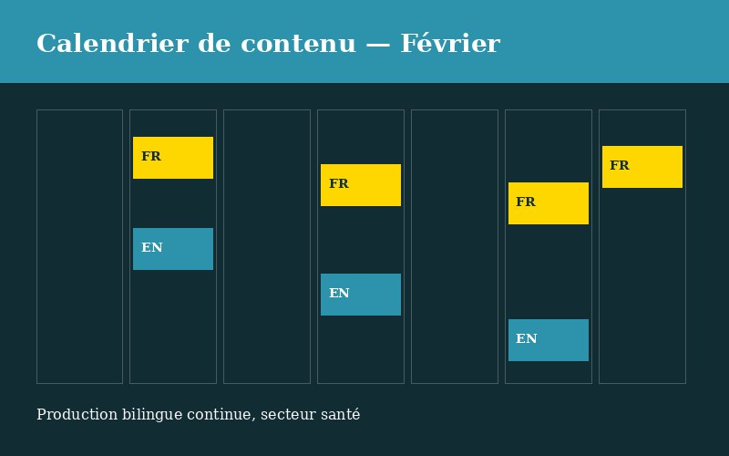
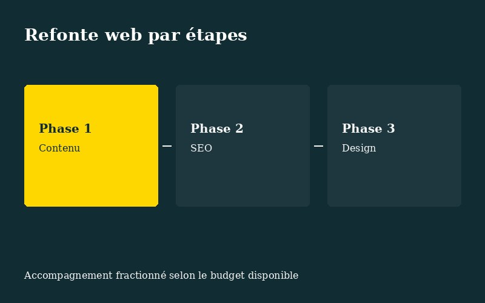
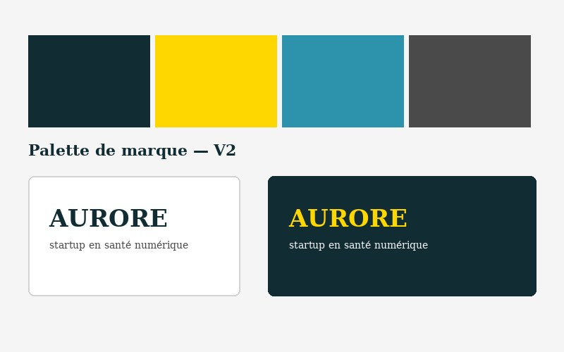
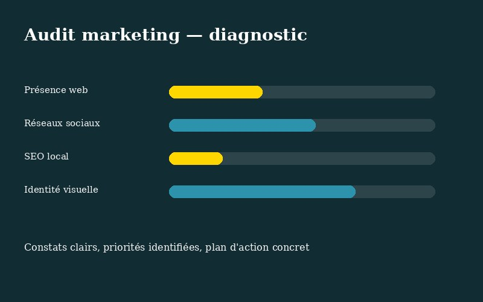
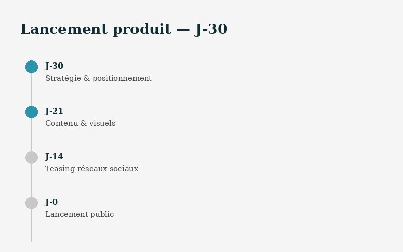

Mandats récents
La confiance que vous placez en nous est précieuse, et on la traite comme telle : aucun nom de client n'est affiché sans accord écrit. Voici néanmoins un aperçu de ce qu'on fait, présenté par secteur.
À propos des visuels : les images ci-dessous sont des illustrations créées pour représenter chaque type de mandat (calendrier, interface, échéancier...), pas des captures d'écran réelles de nos clients. Elles servent à donner une idée concrète du livrable, dans le respect de la confidentialité.
Calendrier éditorial mensuel bâti à l'avance, contenu produit en français et en anglais en parallèle, validation client avant publication, ajustement du ton selon les plateformes.
La difficulté à surmonter
Cartographie des modules avec l'équipe pédagogique, coordination d'un développeur externe, structuration du contenu module par module, tests avec un groupe pilote avant le déploiement complet.
La difficulté à surmonter
Découpage du mandat en trois phases distinctes : d'abord le contenu et les textes de site, puis le SEO de base, puis le design, chaque phase facturée et livrée séparément selon le budget disponible.
La difficulté à surmonter
Atelier de positionnement avant tout visuel, définition de palette et typographie, création des premiers contenus alignés sur le positionnement, mise en place d'un calendrier de publication simple à tenir seul.
La difficulté à surmonter
Analyse de la présence web, des réseaux sociaux, du SEO local et de l'identité visuelle existante, puis remise d'un rapport avec constats classés par priorité et recommandations concrètes.
La difficulté à surmonter
Construction d'un échéancier en compte à rebours, préparation du contenu et des visuels en amont, campagne de teasing sur les réseaux sociaux, coordination du jour de lancement en temps réel.
La difficulté à surmonter
Chaque mandat est différent, mais l'implication reste la même. Discutons du vôtre.
Réserver ma rencontre découverte